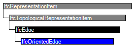

Natural language names
 | Gerichtete Kante - Topologie |
 | Oriented Edge |
 | Arête orientée |
| Gerichtete Kante - Topologie |
| Oriented Edge |
| Arête orientée |
| Item | SPF | XML | Change | Description | IFC4 Addendum 1 |
|---|---|---|---|---|
| IfcOrientedEdge | ||||
| Orientation | MODIFIED | Type changed from BOOLEAN to IfcBoolean. |
NOTE Definition according to ISO/CD 10303-42:1992
An oriented edge is an edge constructed from another edge and contains a BOOLEAN direction flag to indicate whether or not the orientation of the constructed edge agrees with the orientation of the original edge. Except for perhaps orientation, the oriented edge is equivalent to the original edge.
A common practice is solid modelling systems is to have an entity that represents the "use" or "traversal" of an edge. This "use" entity explicitly represents the requirement in a manifold solid that each edge must be traversed exactly twice, once in each direction. The "use" functionality is provided by the edge subtype oriented edge.
NOTE Entity adapted from oriented_edge defined in ISO 10303-42.
HISTORY New entity in IFC2.0.
| # | Attribute | Type | Cardinality | Description | C |
|---|---|---|---|---|---|
| 3 | EdgeElement | IfcEdge | [1:1] | Edge entity used to construct this oriented edge. | X |
| 4 | Orientation | IfcBoolean | [1:1] | BOOLEAN, If TRUE the topological orientation as used coincides with the orientation from start vertex to end vertex of the edge element. If FALSE otherwise. | X |
| EdgeStart :=IfcBooleanChoose (Orientation, EdgeElement.EdgeStart, EdgeElement.EdgeEnd) | IfcVertex | [1:1] | The start vertex of the oriented edge. It derives from the vertices of the edge element after taking account of the orientation. | X | |
| EdgeEnd :=IfcBooleanChoose (Orientation, EdgeElement.EdgeEnd, EdgeElement.EdgeStart) | IfcVertex | [1:1] | The end vertex of the oriented edge. It derives from the vertices of the edge element after taking account of the orientation. | X |
| Rule | Description |
|---|---|
| EdgeElementNotOriented | The edge element shall not be an oriented edge. |

| # | Attribute | Type | Cardinality | Description | C |
|---|---|---|---|---|---|
| IfcRepresentationItem | |||||
| LayerAssignment | IfcPresentationLayerAssignment @AssignedItems | S[0:1] | Assignment of the representation item to a single or multiple layer(s). The LayerAssignments can override a LayerAssignments of the IfcRepresentation it is used within the list of Items. | X | |
| StyledByItem | IfcStyledItem @Item | S[0:1] | Reference to the IfcStyledItem that provides presentation information to the representation, e.g. a curve style, including colour and thickness to a geometric curve. | X | |
| IfcTopologicalRepresentationItem | |||||
| IfcEdge | |||||
| IfcOrientedEdge | |||||
| 3 | EdgeElement | IfcEdge | [1:1] | Edge entity used to construct this oriented edge. | X |
| 4 | Orientation | IfcBoolean | [1:1] | BOOLEAN, If TRUE the topological orientation as used coincides with the orientation from start vertex to end vertex of the edge element. If FALSE otherwise. | X |
| EdgeStart :=IfcBooleanChoose (Orientation, EdgeElement.EdgeStart, EdgeElement.EdgeEnd) | IfcVertex | [1:1] | The start vertex of the oriented edge. It derives from the vertices of the edge element after taking account of the orientation. | X | |
| EdgeEnd :=IfcBooleanChoose (Orientation, EdgeElement.EdgeEnd, EdgeElement.EdgeStart) | IfcVertex | [1:1] | The end vertex of the oriented edge. It derives from the vertices of the edge element after taking account of the orientation. | X | |
<xs:complexType name="IfcOrientedEdge-temp" abstract="true">
<xs:complexContent>
<xs:restriction base="ifc:IfcEdge">
<xs:sequence/>
</xs:restriction>
</xs:complexContent>
</xs:complexType>
<xs:element name="IfcOrientedEdge" type="ifc:IfcOrientedEdge" substitutionGroup="ifc:IfcEdge" nillable="true"/>
<xs:complexType name="IfcOrientedEdge">
<xs:complexContent>
<xs:extension base="ifc:IfcOrientedEdge-temp">
<xs:sequence>
<xs:element name="EdgeElement" type="ifc:IfcEdge" nillable="true"/>
</xs:sequence>
<xs:attribute name="Orientation" type="ifc:IfcBoolean" use="optional"/>
</xs:extension>
</xs:complexContent>
</xs:complexType>
ENTITY IfcOrientedEdge
SUBTYPE OF (IfcEdge);
EdgeElement : IfcEdge;
Orientation : IfcBoolean;
DERIVE
SELF\IfcEdge.EdgeStart : IfcVertex := IfcBooleanChoose
(Orientation, EdgeElement.EdgeStart, EdgeElement.EdgeEnd);
SELF\IfcEdge.EdgeEnd : IfcVertex := IfcBooleanChoose
(Orientation, EdgeElement.EdgeEnd, EdgeElement.EdgeStart);
WHERE
EdgeElementNotOriented : NOT('IFCTOPOLOGYRESOURCE.IFCORIENTEDEDGE' IN TYPEOF(EdgeElement));
END_ENTITY;
 EXPRESS-G diagram
EXPRESS-G diagram Link to this page
Link to this page